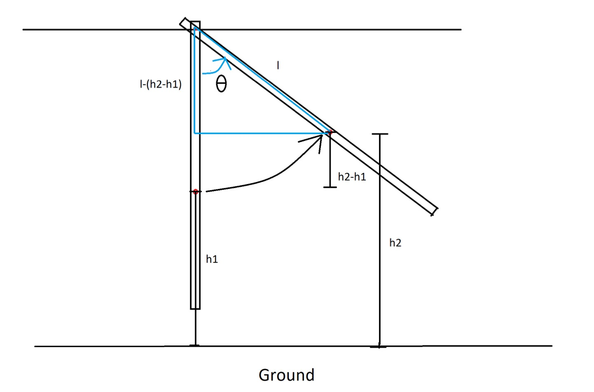
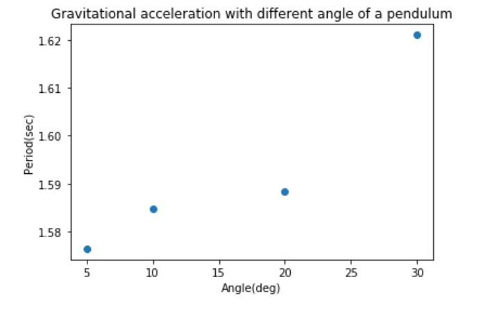
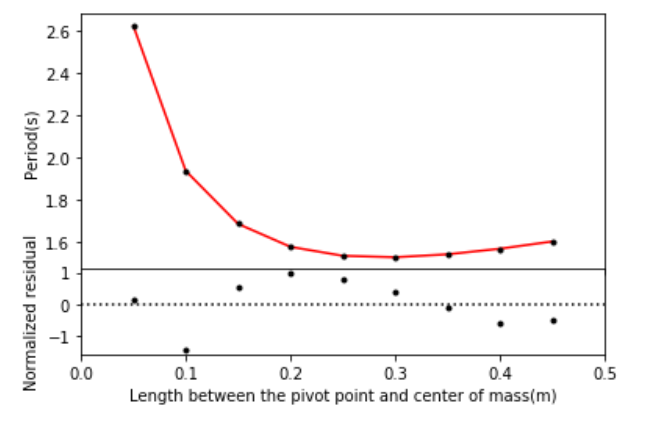

Everyone knows the gravitational acceleration g is -9.8m/s2. Right? Maybe? Maybe not? Okay anyway. Now you know. When you drop a ball the acceleration is -9.8m/s2(assume no outer force such as air, friction, etc). But have you wonder about how people get this number? In this article, I will discuss about how to use a physical pendulum to estimate the gravitational acceleration. All analysis code are in python. If you need the code for your project, sorry I can't help you, but I can provide some information. Feel free to contact me.
A physical pendulum is a kind of pendulum that consists of a rigid body that undergoes fixed axis rotation at a fixed pivot point. The gravitational force acts at the center of mass of the physical pendulum and causes the pendulum to swing. The period of the physical pendulum can be calculated from the equation of motion of the bar by using the relation between period(T), the radius of gyration(k), and the length between the pivot point and center of mass(l). In this lab, I measure the period of oscillation of the physical pendulum by a photogate at nine different l and use the fitting method to determine the optimized value for gravitational acceleration constant g and radius of gyration k. Then compare the optimized value with the known g. The fitting value stays consistent with the accepted value.
First, I measure the bar’s total length with a meter stick, which shows the bar is one meter long. There are nineteen holes in the bar. Each hole is separated by 0.05 m. So the center of mass is in the middle of the bar, which is the tenth hole. I place the photogate at the end of the bar. When the bar swing crosses, the photogate will record the time and determine the oscillation period. Photogate has a very tiny error of 0.0025 sec. To keep measuring at the same angle, I create a method by measuring the distance from the ground to one hole at the stationary state and comparing it with the distance from the ground to the same hole at the initial state. See Fig. 1. The angle θ can be express as
$$\theta = \cos^{-1}(\frac{l-(h2+h1)}{l}) \text{.}$$
The reason for keeping the same angle in all measurements is the amplitude of oscillation will affect the period when it becomes large. The small angle approximation only works when the amplitude is small. To observe the relation between angle and period. I change the angle from 5 deg to 10 deg, 20 deg, and 30 deg. I measure the data for the sixth hole to keep the length the same all the time. From photogate data, it reveals the larger the angle is, the longer the period is. See Fig. 2.
Then, I start to measure the period for different holes. I keep the amplitude at theta = 5◦and measure the period from the first hole to the ninth hole. So the distance between the center of mass and the pivot point is different each time. Total of nine photogate measurements. Each measurement takes multiple period values in one minute. I take the mean value of each hole’s data. See Fig. 3.
Next, by using the length and period data, I make a fitting model. The equation for the period of a physical pendulum is $$T = 2\pi(\frac{k^2+l^2}{gl})^{0.5}$$ where k is the radius of gyration and g is gravitational acceleration constant. I use these two variables as the fitting parameters in the least-squares fitting method. With initial guess g = 9.8 and k = 0.29. The result of fitting parameters are g = 9.79 ± 0.03m/s2 and k = 0.2878 ± 0.0005m. Comparing the fitting value with data, the normalized residual appears no pattern at the first and second points. However, from the third to ninth points, there is a wave pattern in residual.
For χ2 statistic, the value is 4.68. The degree of freedom is 7. The standard deviation is 3.74. The χ2 lie within one standard deviation of the mean 68%. It shows the model is consistent with the data. The significance of getting this result is 69.8%.
From the analysis result, we can see that the significance is larger than 5%. That con- cludes the model is accepted. First, comparing the optimized k value with k value from bar’s dimension, $$k = (\frac{a^2+b^2+c^2}{12})^{0.5}$$ where a is the length, b is the width and c is the thickness of the bar. For length measurement, I can’t use a vernier caliper because it is too long, so I use a meter stick to get a value of a = 1.000 ± 0.001m. For width and thickness measurements, I use a vernier caliper which can get a more precise value. I get b = 0.03800 ± 0.00005m and b = 0.00600 ± 0.00005m. By Eqt.3, I get k = 0.2889 ± 0.0001m. The optimized value is close to the dimensional value, but it is not in the error range. So I think there are more human errors when measuring the size of the bar. Second, the accepted value ofg is equal to 9.80665m/s2[1]. The optimized value for g is g = 9.79 ± 0.03m/s2, which is in the error range. Thus, it is an acceptable value for the gravitational acceleration constant.